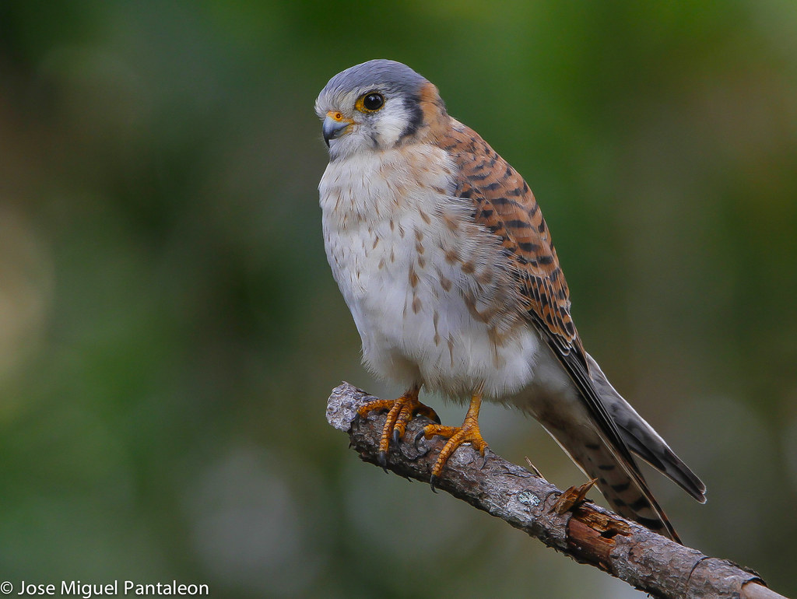

HALCÓN INDONESIO
Microhierax fringillarius
Microhierax fringillarius

El halconcito indonesio o falconete indonesio (Microhierax fringillarius), es una de las más pequeñas aves de presa, suele medir entre 14 y 16 cm de longitud. Es originario de Brunéi Darussalam, Birmania, Tailandia, Malasia, Singapur e Indonesia.
Suele criar en huecos de árboles. Se alimenta de pequeñas aves e insectos. Su hábitat suele ser bosques y zonas abiertas con arbolado.
Tiene el dorso negro, la parte inferior del cuerpo de color blanquecino y rojizo. Cabeza negra y una amplia línea blanca detrás del ojo. Cola negra con unas bandas blancas en la cara inferior.